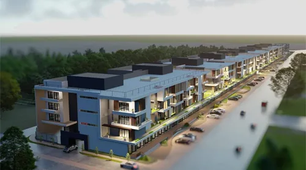

Agrément n° 02 001 · Cat. A2

Bâtiments
Ingénierie civile · Architecture
- Immeubles IGH/ERP — Villas
- Établissements hôteliers/hospitaliers — Habitats planifiés
- Pôles industriels — Stades — Centres de jeux/Spectacles
- Infrastructures universitaire/scolaire/culturelle/cultuelle
- Terminaux de transport — Équipements